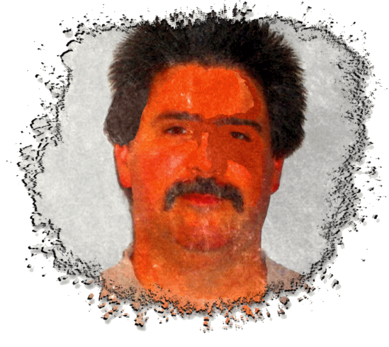

Welcome to the personal website of
Hello!
Welcome to the personal website of
Frank W. Zammetti.
(He's a handsome devil, ain't he?)
This is the sample app from the second chapter of the book Practical JAMstack from Apress by Frank W. Zammetti.
It's a very simple personal website that demonstrates basic JAMstack concepts, specifically the J and the M in JAMstack: JavaScript and Markup (APIs come later in the book) as well as hosting a site on a CDN (GitHub Pages specifically).
To get around the site, move your cursor to the four edges of the screen. Navigation bars will appear that you can click to move to other pages of the site to get to know me a bit, including info about my professional life (My Work), my family life (My Family), my personal life (My Hobbies) and how to get in touch with me (Contact Me).